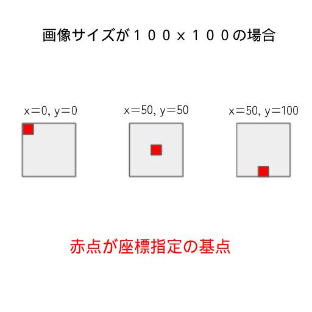

作成したゲームエンジン紹介1
ゲームエンジン紹介
ゲームエンジンを作りました
このゲームエンジンを使い、出てきた芽をつつくと昇天するゲームを作ってみました
今回は、このゲームの解説を通してゲームエンジンの使い方をお話ししたいと思います
ゲームエンジンとは
ゲームエンジンとは、ゲームでよく行う処理をまとめたものです
ゲームエンジンでは座標の計算やレイアウト、画像処理などを楽に行うための関数やクラスなどが用意されています
これにより、面倒なプログラムを自分でいちいち書かなくて済むようになるので、ゲーム開発が楽になります
これがゲームエンジンというものです
作成したゲームエンジンの解説
今回作成したゲームエンジンは、オブジェクト指向で作っています
興味がある方は、このゲームエンジンのプログラムコードも見ていただけると嬉しいです
たった数百行程度しかないので、プログラム初心者の方でも頑張れば読めると思います
また、データドリブンの勉強にもなると思います
「データドリブンって何？」と思った方は、この機にデータドリブンを深く知ってみるのはどうでしょうか？
画像素材について
アニメーションを作るための画像は、「Aseprite」というスプライトエディタで作りました
また、「Aseprite」ではアニメーションのタイミングや間隔、スプライトシートの切り取り範囲などをjson形式で出力できます
「Aseprite」は便利なのでオススメです
便利機能紹介
座標指定の基点を指定できる
画面に絵を描画する時、以下のような考えでＸ，Ｙ座標を指定しますよね？

その際、普通は座標を計算するプログラムを書かなくてはいけませんが、このゲームエンジンではその指定ができます
つまり、コードの記述量が減ります
一番右の例は対戦格闘など、キャラクターの地面の立ち位置を基点にして表示する時に使います
真ん中の例は、雪の結晶や光を四方八方に光を散らせるパーティクル効果を表現する際に使われます
このようにゲーム開発では都合に合わせて、どこを基点に表示するのか変わってくると思います
これらをプログラムで一々調整するのではなく、「Aseprite」などのアニメーションデータで雪がチラつくようなアニメーションを組み、それを再生させながら四方八方に散らせて、最後はアニメーションの透明度で消えていくようにすればいいよねっていう発想です。
大体のゲームエンジンも、このように画像側主体で動かしてるみたいで、基本的な考え方でもあります
つまり、画像が自分で自分の次のフレームの画像を切り替え、自分の位置も切り替えるということです
プログラムはその切り替えるアニメーションパターンや、四方八方に飛び散る物理演算を設定するだけで、あとは画像側が勝手に動く
私が紹介した草を引っこ抜くゲームでは、「Mebae」「Idle」「Pickup」のアニメーションパターンをAsepriteで作っています
インターバルで草を生成するルーチンは、以下方法でスプライトを生み出している
- MebaeからIdleまで再生
- X、Y位置をランダムに生成し、スプライトを生成
- 当たり判定を物理演算の一種として登録
- クリックされていたら「Pickup」へ切り替える
- 「Pickup」が終われば、スプライトが消えるよう指定
といた感じの処理をしています
Idleはループさせるという指定です
草の生成上限は60個にしています
function isPickUp(spr) {
if (spr.isTouched()) {
// Pickupが終わったら消えるように設定
spr.setTagNames(["Pickup","DIE"]);
}
}
function getRandomInt(max) {
return Math.floor(Math.random() * max);
}
async function dispatch() {
// 最大６０個にしておく
if (gPrim.primitives.length <= 60) {
// 乱数で座標を生成
var x=32 + getRandomInt(640 - 64);
var y=32 + getRandomInt(480 - 64);
// ["Mebae", "Idle" ,"REPEAT"]のように指定すると、Mebae、Idleの順に実行した後、Idleをリピートする //
["Mebae", "Idle" ,"DIE"]の場合はIdleを実行した後Spriteが消える
var sp=await Sprite.build("Futaba", jsMebae,
["Mebae", "Idle" ,"REPEAT"], x, y, 1, 0);
sp.addPhysic(isPickUp); gPrim.append(sp);
console.log("dispatched", x, y)
}
nextTime=3 + getRandomInt(5) * 1000;
setTimeout(dispatch, nextTime);
}
ゲームエンジンは画面の表示位置以外も担当しています
当たり判定、繰り返し、消滅、親子関係（親に追従するかしないかの指定も可）、音声再生などなどです
例えば何もないスプライトを親にし、その子供としてダンジョンマップを登録する
上下左右の移動で、何もない親スプライトの位置を変えれば子供の位置が全部変わる
つまりマップがスクロールします
例えばぷよぷよのぷよが、自分の上下左右に自分と同じぷよがいるかどうかを調べ、自分の体を変形させる（その際、変形用アニメも用意されていればスムーズに変形する）
こういったことを、プログラムだけでやるとすごく大変です
ゲームエンジンを使えば、スプライトが自分で考えて自分の姿形を変え、消滅したり、新たなスプライトを生む出したりもできます
ゲームエンジンのシナリオデータだけで、自分がやられたら、子供をたくさん生み出すような敵も作れます
子供は子供の攻撃パターンで動くこともでき、物理エンジンの一種として登録させることもできます
ゲームエンジンがあれば、これらの処理を全部同時に動かすことができます
RPGもシューティングも格闘ゲームもパズルも同じ要領で作れます
ゲームの仕事が来た時、ゲームエンジンを作ってゲームを作れば楽をでき、余った時間で好きなことができます。
G123などは、すでにやっているのではないでしょうか？
あと、ブラウザに特化したゲームエンジンなら、スマホでもPCでもゲームをプレイできるといったメリットもあります
まとめ
いかがだったでしょうか？。
この記事が皆さんのお役に立てたら嬉しいです。
ではまた！